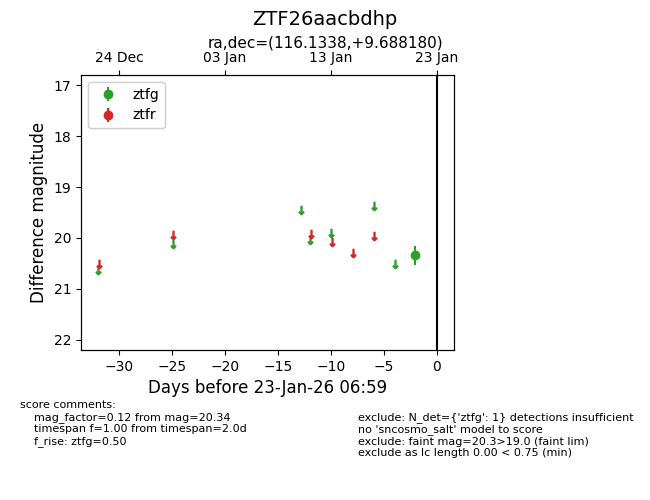
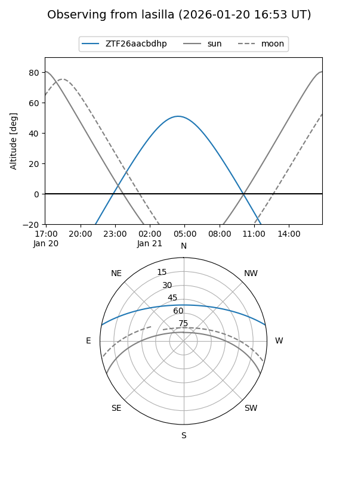
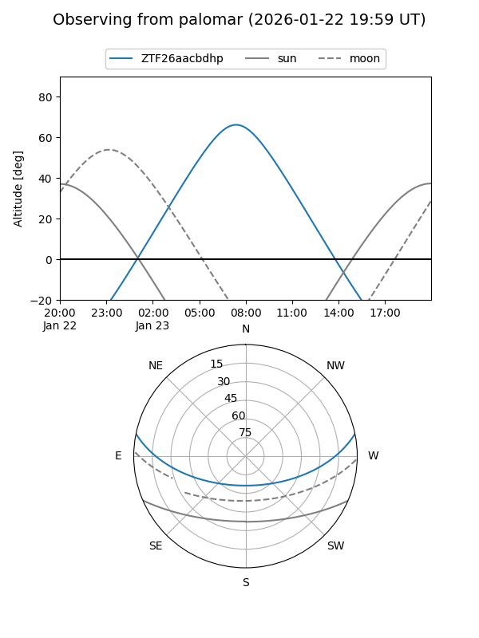

ZTF26aacbdhp
Target ZTF26aacbdhp at 2026-01-21 06:56
Aliases and brokers:
FINK: link
Lasair: link
ALeRCE: link
alt names
ZTF26aacbdhp (ztf,fink_ztf)
Coordinates:
equatorial (ra, dec) = 116.1338,+9.68818
equatorial (HMS+DMS) = 07:44:32.10,+09:41:17.45
galactic (l, b) = (210.1532,+16.15126)
Flags:
Photometry:
last ztfg=20.34
1 ztfg detections
Lightcurve

Visibility


Additional plots